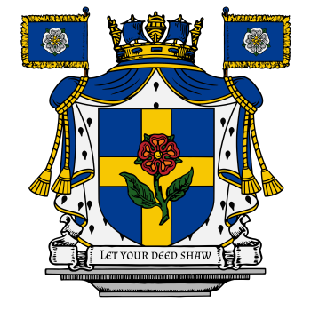
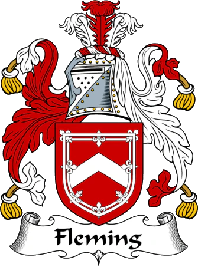
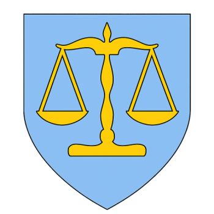
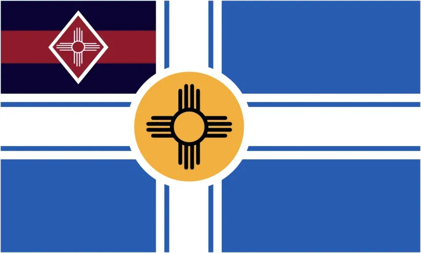
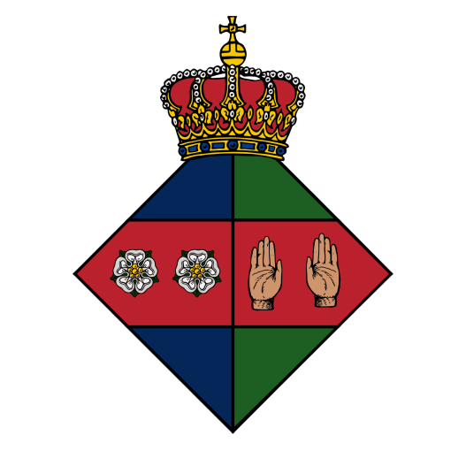
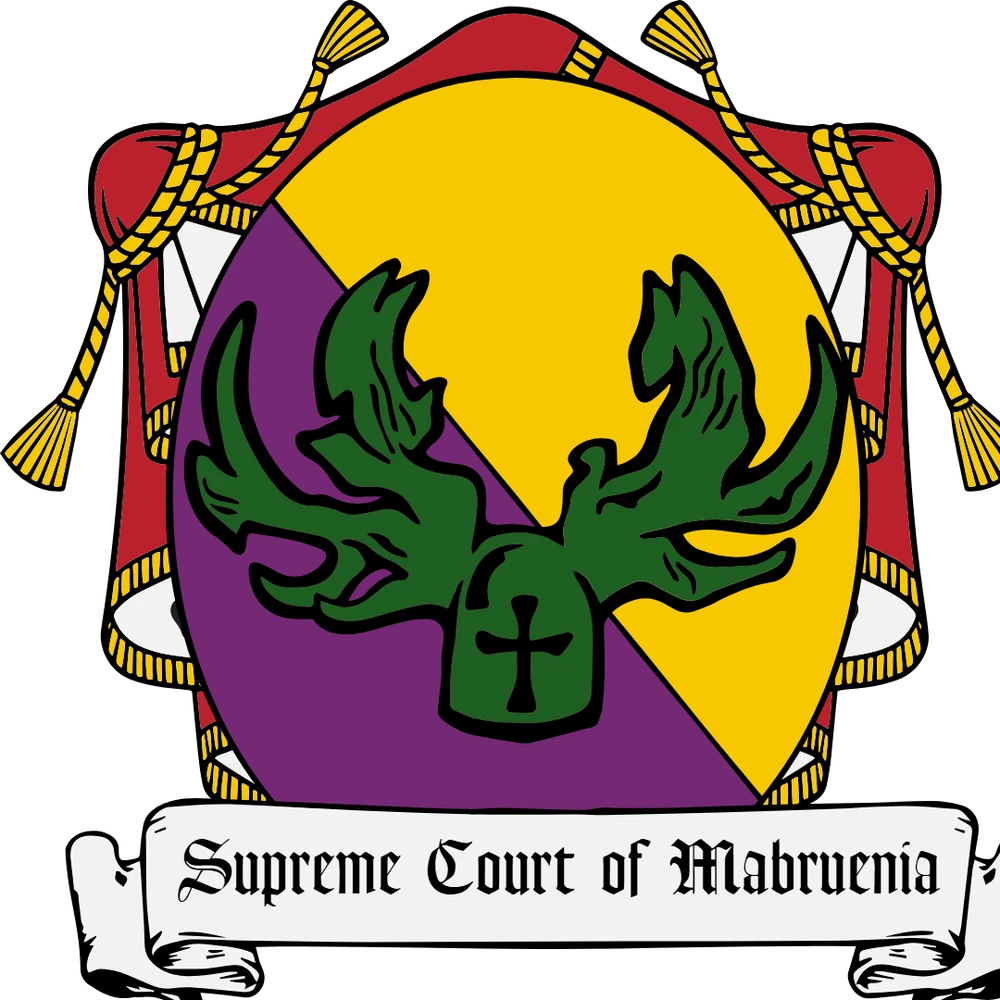

Official Government Site
Navigation
- Home
- National Archives
- Royal Decrees
- Government Offices
- Foreign Affairs
- Land Claims
- National Symbols
- Site Index
- Government Forum
Citizen Services
National Flag
The national flag represents the unity and sovereignty of the Kingdom of Mabruenia.
Coat of Arms
The national coat of arms serves as the official emblem of the state and symbolizes the authority of the Crown.

Royal Coat of Arms
The Royal Coat of Arms represents the House of Fleming and the monarch’s authority.

National Motto
"Let the Deed Shaw"
National Anthem
The national anthem reflects the heritage and aspirations of the Kingdom.
Lyrics available upon official publication.
National Colors
- Red – The blood of those who have died for freedom
- Blue – The sky above the nation
- White – Peace and unity
National Animal
The national animal is the dog, symbolizing loyalty and companionship.
National Flower
The national flower is the Mexican Golden Poppy, representing natural beauty and resilience.
National Food
The national food is tacos, reflecting the cultural diversity of the nation.
Government and Institutional Symbols
Ministry of Justice
The symbol of the Ministry of Justice is a balanced scale, representing fairness and impartiality.

War Flag
The war flag is used by the armed forces and represents strength and resilience in times of conflict.

Grand Assembly
The Grand Assembly represents the legislative authority of the Kingdom.

Ministry of War & Defense
Responsible for national defense and security.

Supreme Court of Mabruenia
The highest judicial authority responsible for interpreting the law.

Additional national symbols may be designated by Royal Decree.
Filed under the Ministry of Education and Culture
Document Code: Mabruenian Flag Code 2025